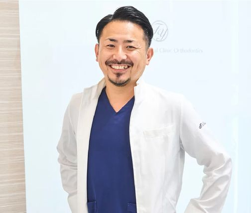
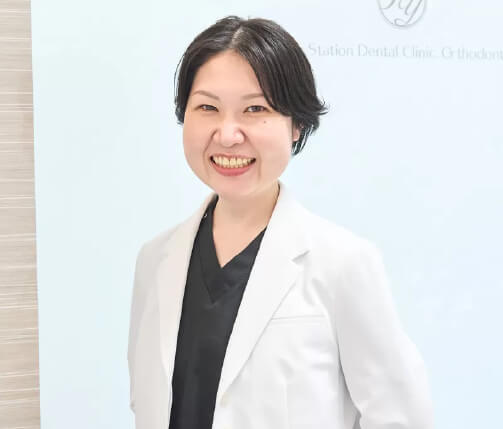
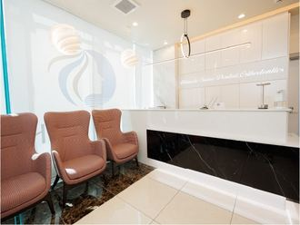
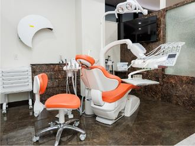
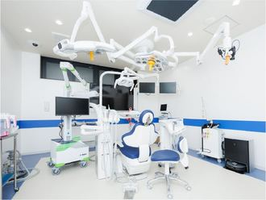
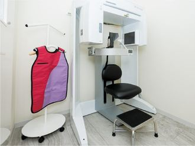

YouTubeをご覧いただいた方へ
動画でお話ししたことを、
あなたのお口で
確かめてみませんか。
院長北村 隆典 YouTubeで解説している歯科医師です
名古屋・栄でインプラント治療・オールオン4を行っている歯科医院です。CT撮影込みの無料相談で、骨の状態と費用の総額をお伝えします。
- 当日の契約なし
- ご家族の同席歓迎
- 相談だけでもOK

FREE CONSULTATION
無料相談で
行うこと
「自分の場合はどうなのか」は、お口の中とCTを見ないと正確にはお答えできません。
無料相談では、次のことを行います。
-
お悩み・ご希望を伺います
今お困りのこと、ご希望の治療、動画を見て気になったことを、そのままお話しください。
-
CTを撮影します（無料）
骨の量や質、神経・血管の位置を立体的に確認します。
-
治療の選択肢と、費用の総額をご説明します
インプラントができるか、どの方法が合いそうか、期間・費用・お支払い方法・リスクをご説明します。
-
お持ち帰りいただき、ゆっくりご検討ください
その日に契約をお願いすることはありません。ご家族とご相談のうえ、お決めください。
- ご家族の同席歓迎
- 他院で断られた方・セカンドオピニオンも
- 無理な勧誘はしません
ご来院時にお持ちいただくと便利なもの：健康保険証／お薬手帳（服用中のお薬がある方）／今お使いの入れ歯
VIDEOS
動画で、もう一度
確認する
院長の北村が、治療を決める前に知っておいていただきたいことを解説しています。
まず見ていただきたい3本
-
インプラント治療を
おすすめしない方 （動画を再生）治療を始める前に知っておきたい、インプラントが向かないケースについて。
-
オールオン4の費用
100万円と500万円の違い （動画を再生）費用に差が出る理由と、見積もりで確認したいポイントについて。
-
オールオン4の
しくみと治療の流れ （動画を再生）4本のインプラントで歯を支えるしくみ、治療の流れと注意点について。
入れ歯・インプラントで迷っている方へ
-
歯を失ったときの3つの選択肢
（ブリッジ・入れ歯・インプラント） （動画を再生） -
60代の方へ
入れ歯とインプラントの選び方 （動画を再生） -
入れ歯が合わない方の
選択肢 （動画を再生） -
インプラントは
何歳まで受けられる？ （動画を再生）
契約の前に確認したいこと
DOCTORS
担当する医師の
ご紹介

「その場しのぎではなく、将来にわたり責任を持てる治療を」
歯科治療において大切なことは、その場しのぎの治療ではなく、将来にわたり責任を持てる治療を行うことです。当院では、安心・安全のインプラント治療をご提供することを使命にしております。
YouTubeでは、治療を決める前に知っておいていただきたいことを、できるだけ率直にお話ししています。動画を見て気になったことは、無料相談でそのままお聞きください。
- 学歴
- 愛知学院大学 歯学部 卒業
- 経歴
- 臨床研修医（医療法人スワン会）／白鳥スワン歯科／歯科オーラルクリニックエクラ 副院長／医療法人スマイル 入職
- 現在
- アルティメイト栄歯科・矯正歯科 院長
- 所属学会
- 日本口腔インプラント学会／日本歯周病学会／日本外傷歯学会
-

麻酔医（医療法人スマイル）
河合 温子
すべての手術に麻酔医が立ち会い、静脈内鎮静法（うとうとした状態で手術を受けられる方法）や全身麻酔に対応しています。治療前から全身の状態も管理します。
- 鶴見大学歯学部附属病院 歯科麻酔学講座
- 東京医科大学病院 麻酔科
- 東京都立小児総合医療センター 麻酔科
- 愛知県がんセンター 麻酔科
当院のインプラント治療
- 歯科用CTと診断ソフトで、手術前にシミュレーション
- X-Guide（エックスガイド）で、埋め込む位置・角度・深さを手術中に確認
- インプラントはノーベルバイオケア社製を使用
- インプラント専用のオペ室
- 1本からのインプラント・オールオン4・ザイゴマインプラントに対応
- 治療後も10年保証（半年に1度の定期検診が条件）
院内のご紹介

待合室 
診療室 
オペ室 
歯科用CT
PRICE
費用の目安
インプラント治療は自由診療（公的医療保険の適用外）です。
診断の結果をもとに、治療を始める前に総額をご説明します。
| 初回相談・CT撮影 | 無料 |
|---|---|
| インプラント（1本） | 319,000円（税込）税抜 290,000円デンタルローン 月々4,600円台〜 |
| オールオン4（片あご） | 1,925,000円（税込）税抜 1,750,000円デンタルローン 月々19,000円台〜 |
| エックスガイド使用料（使用する場合・片あご） | 55,000円（税込）税抜 50,000円 |
- インプラント・オールオン4は手術費用の目安です（CT撮影・画像診断の費用を含みます）。麻酔や最終的な歯（上部構造）などの費用が別途かかる場合があります。
- お口の状態によって必要な本数や処置が変わるため、総額は診査・診断のあとにご説明します。ご納得いただいてから治療を始めます。
- デンタルローンはローン会社の審査があります。月々のお支払額は、回数・金利・頭金などにより異なります。
お支払い方法
分割払いOK
均等払い・ボーナス併用、クレジットカード、デンタルローン
医療費控除
税金の還付・減額
確定申告で受けられる場合があります
※1年間（1月〜12月）の医療費が10万円を超えた場合が対象です。生計を一にするご家族の医療費も合算できます。
10年保証
再治療は無料
万が一インプラントに不具合が生じた場合
※半年に1度の定期検診を受けていただくことが条件です。
FAQ
よくあるご質問
Q相談だけでも大丈夫ですか？ その日に契約を勧められませんか？
ご相談だけでもまったく問題ありません。初回のご相談とCT撮影は無料で、その日に契約をお願いすることはありません。ご説明をお持ち帰りいただき、ご家族と相談してからお決めください。
Q動画の内容について、相談の前に質問できますか？
LINEでご質問いただけます（返信は平日の診療時間内）。お口の状態によってお答えが変わる内容は、CTで確認したうえで、無料相談の際に詳しくご説明します。
Q家族と一緒に話を聞けますか？
はい、ご家族の同席を歓迎しています。費用やお支払い方法、通院の付き添いについても一緒にご説明します。医療費控除は、生計を一にするご家族の医療費を合算して申告できます。
Q他院で「骨が足りない」「インプラントは難しい」と言われました。
オールオン4は、奥のインプラントを斜めに埋め込むことで、骨の少ない部分を避けて治療できる場合があります。上あごの骨が少ない方には、頬骨を利用するザイゴマインプラントという選択肢もあります。まずはCTで骨の状態を確認させてください。セカンドオピニオンとしてのご相談も受け付けています。
Q高齢でも、持病があっても治療を受けられますか？
年齢だけを理由に治療ができないということはありません。全身の健康状態や骨の状態をもとに判断します。糖尿病・高血圧などの持病がある方も、状態が安定していれば治療できる場合があります。骨粗しょう症のお薬を服用中の方は、治療に影響する場合があるため、お薬手帳をお持ちください。
Q手術が怖いです。痛みはありますか？
手術は局所麻酔を行ったうえで進めます。すべての手術に麻酔医が立ち会い、うとうとした状態で手術を受けられる静脈内鎮静法や、全身麻酔にも対応しています。術後の痛み・腫れには個人差がありますが、痛み止めをお出しし、経過を丁寧に確認します。
Q土日に相談できますか？
診療は平日（月〜金）のみです。Webの予約リクエストとLINEは24時間受け付けていますので、ご都合のよい平日の日時をお知らせください。当院からお電話で日時を確定します。
Q名古屋市外から通えますか？
地下鉄「栄駅」から徒歩3分で、愛知県内や岐阜・三重からも通いやすい場所です。治療期間や通院回数は、お口の状態によって異なるため、無料相談の際に目安をご説明します。
RESERVE
まずは無料相談で、
あなたの場合を知ることから。
ご希望の日時を選んで送信してください。当院からお電話で日時を確定します。
無料相談でわかること
- インプラントで治療できる可能性
- あなたに合いそうな治療の選択肢
- 期間と費用の総額、お支払い方法
- 当日の契約なし
- ご家族の同伴歓迎
- 相談だけでもOK
ご来院時にお持ちいただくと便利なもの
健康保険証／お薬手帳（服用中のお薬がある方）／今お使いの入れ歯
ACCESS
アクセス・診療時間
アルティメイト栄歯科・矯正歯科
- 所在地
- 〒460-0003
愛知県名古屋市中区錦3-15-33
アルティメイト錦大津通3階 - アクセス
- 地下鉄「栄駅」2番出口から徒歩3分
- 電話
- 052-957-3357
電話受付：月〜金 9:00〜19:00
| 時間 | 月 | 火 | 水 | 木 | 金 | 土 | 日 |
|---|---|---|---|---|---|---|---|
| 9:30〜12:30 | ● | ● | ● | ● | ● | ／ | ／ |
| 14:30〜19:00 | ● | ● | ● | ● | ● | ／ | ／ |
休診日：土曜・日曜・祝日／治療の受付は診療終了の30分前まで
治療に伴うリスク・副作用について
- インプラント治療・オールオン4は、公的医療保険が適用されない自由診療です。
- 外科手術を伴うため、術後に痛み・腫れ・内出血などが生じることがあります。
- 骨の量や全身の状態によっては治療を受けられない場合や、骨造成などの追加処置が必要になる場合があります。
- オールオン4では、骨の状態などにより、手術当日に仮歯を装着できない場合があります。
- 糖尿病などの全身疾患や喫煙は、治療の経過に影響を及ぼす可能性があります。
- インプラント周囲炎を防ぐため、毎日のセルフケアと定期的なメンテナンスが必要です。
- 静脈内鎮静法・全身麻酔では、まれに血圧の変動や呼吸抑制などが起こる可能性があります。
- 治療期間・通院回数・費用は、お口の状態により異なります。